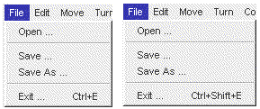

Before concluding this introduction to application level main menu interfaces the use and implementation of menu accelerators will be introduced. A menu accelerator, also known as a keyboard shortcut, allows the user to post a dialog which is associated with a menu item by pressing a combination of keys on the keyboard. For example the key combination <CONTROL><E> may cause an application's exit dialog to be posted without having to navigate the File menu. Accelerators tend to be favoured by expert users who can also be expected to be the most critical of the overall interface design and notice their absence.
A menu accelerator can be associated with a MenuItem by using its setShortcut() method, which requires an argument of the MenuShortcut class. Such an argument can most conveniently be provided by creating an anonymous instance of the MenuShortcut class in the setShortcut() method call, specifying the key required by using its class wide manifest name from the KeyEvent class. For example the following line added in the appropriate place in the ManuBarTuttleInterface class will associate the <CONTROL><E> shortcut with the exitButton MenuItem .
exitButton.setShortcut( new MenuShortcut( KeyEvent.VK_E));
It should be included, for purposes of maintainability, in the sequence of steps which creates and installs the exitButton into the fileMenu. The phrase new MenuShortcut( KeyEvent.VK_E) constructs the anonymous MenuShortcut instance which is associated with the exitButton by means of its setShortcut() method. If this method is included the Java run time system is able to recognize the existence of the shortcut and advertise it upon the menu, as shown in the left hand image of Figure 6.11.

Figure 6.11 The File menu with accelerators on the Exit … option.
The accelerator shown on the right hand image in Figure 6.11 was obtained by using the alternative MenuShortcut constructor which has a second boolean argument indicating if the <SHIFT> key should also be associated with it, as follows.
exitButton.setShortcut( new MenuShortcut( KeyEvent.VK_E, true));
The nomination of the <CONTROL> key is a feature of the peer environment not of Java. For example if this were to be executed on a Macintosh computer the nominated key would be the <APPLE> key. This completes the implementation of the MenuBarTuttle interface as described at the start of the chapter. Further development of this interface will be presented in Chapter 8.